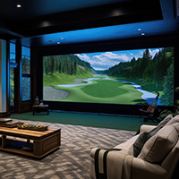
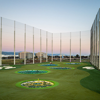

Winter Golf Practice Tour
In Colorado, the winter months don't have to mean the end of golf season. While the courses might be covered in snow, local facilities offer excellent opportunities to keep your swing fresh. From heated outdoor ranges that let you see your ball flight, to state-of-the-art indoor simulators that provide precise launch data, there are plenty of options to practice year-round. This tour highlights the best places to practice when the temperature drops, balancing high-tech feedback with traditional range sessions.
Start your tour and keep your swing dialed in this winter!

Family Sports Center - A double-decker heated driving range in Centennial perfect for tracking real ball flight in the cold...
PGA Tour Superstore - Practice bays equipped with simulators to help you dial in your launch data and distances...

The Hangar Club - Premium TrackMan simulators in Denver allowing you to play iconic courses indoors...

Living Room Setup - The most convenient location for mastering your putting mechanics and face control on a mat...


Topgolf Thornton - A great entertainment range with climate-controlled bays for target practice and warmup...
| Location Name | Facility Type | Best For | City |
|---|---|---|---|
| Family Sports Center | Heated Range | Full Bag & Ball Flight | Centennial |
| PGA Tour Superstore | Indoor Simulators | Dialing in Launch Data | Greenwood Village |
| The Hangar Club | TrackMan Simulators | Playing Iconic Courses | Denver |
| Living Room | Home Setup | Putting Mechanics | Home |
| Golf Haus | GOLFZON Simulators | Casual Practice | Centennial |
| Topgolf | Entertainment Range | Target Practice | Thornton |